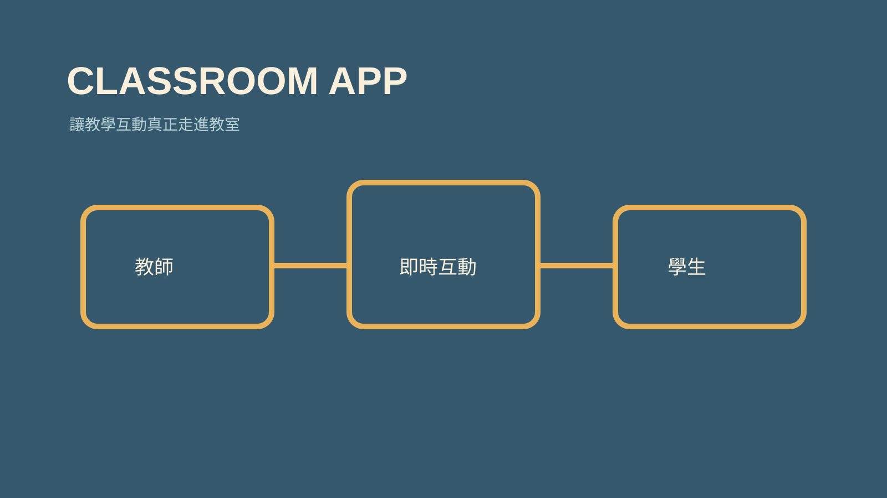

技能包 · 教學工具
課堂互動 App 設計師
2026.08 · 個人專案

FIG. 17 — 產品主畫面
關於這個作品
這套 Skill 將課堂情境轉化為可開發的互動產品規格。它協助釐清教師、學生與管理端流程，選擇合適的 Next.js、Firebase 與即時同步架構，並在動工前處理連線、投影與操作節奏等真實教室限制。
作品亮點
以需求訪談釐清角色、學習目標與互動規則
規劃教師端、學生端與即時同步流程
納入斷線重連、投影與課堂操作節奏
將教學想法收斂為可執行的 App 規格